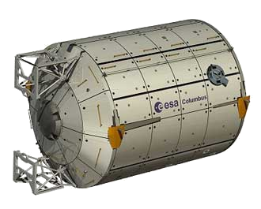

Les intérêts scientifiques font partie des intérêts principaux de l’exploration spatiale. Faire des expériences dans l’espace permet de voir les effets de l’impesanteur sur des phénomènes déjà étudiés sur Terre. Les études menées par exemple dans la station Mir ont été faites notamment sur la mesure de spectres et d’émission de rayons X en astrophysique, la production de matériaux dans l’espace mais aussi des expériences en biologie.
Une imprimante 3D dans l’espace
La
NASA NASA
National Aeronautics and Space Administration est l’agence gouvernementale qui s’occupe du programme spatial civil des États-Unis.
a récemment envoyé une imprimante 3D dans l’espace sur l’ISS ISS La Station Spatiale Internationale est un projet international dont la construction a commencé à être réalisée en 1998 grâce à de nombreuses agences spatiales de différents pays dont la NASA, le CNES (France), le Roscosmos (Russie) , etc.

Placée sur une orbite basse (330-420km), elle est habitée en permanence par un équipage mixte et international d’astronautes et scientifiques de différentes spécialités.
Actuellement elle a une masse d’environ 400 tonnes et occupe la surface d’un terrain de football. .
Cette imprimante utilise le dépôt de fils couche par couche pour créer un objet,
comme les imprimantes 3D les plus répandues sur Terre.
Lors de l’impression, un objet 3D conçu dans un logiciel de modélisation comme Blender, Solidworks ou Google Sketchup est convertit en un fichier GCode GCode Le GCode est un fichier texte contenant ligne par ligne les instructions qu’une imprimante 3D devra exécuter. Ce fichier est généré par des programmes appelés "slicers", qui vont découper la pièce et créer un trajet couche par couche. . Ce fichier décrit tous les mouvements (et températures) que l’imprimante va exécuter : il n’est donc pas possible d’utiliser un même fichier GCode sur deux imprimantes de modèles différents !
Dans le cas de l’imprimante de l’ISS, la NASA dispose du même modèle sur Terre pour tester les fichiers GCode avant de les envoyer. C’est la société partenaire Made In Space qui s’en charge. Mais il a tout de même fallut qu’un astronaute la calibre.
- Vu d’une impression collé sur le plateau
- ©NASA (domaine public)
Sur l’image, on aperçoit un objet "made in space". Le fait d’imprimer dans l’espace est une réelle révolution technologique car pour obtenir un objet dans l’espace il fallait attendre jusqu’alors plusieurs mois. Maintenant, on obtient l’objet en une à 12h (le temps d’impression). Les objets imprimés dans l’espace seront ensuite renvoyés sur Terre pour que des scientifiques les analyseent [1].
Récemment, le commandant de mission Barry Wilmorela, avait besoin d’une manivelle (douille à cliquer). Cette manivelle a été conçue par MadeInSpace qui a passé une semaine à créer les plans et tester l’objet avant de l’envoyer. Le commandant a ensuite obtenu au bout de quatre heures d’impression son outil. C’est le premier outil imprimé dans l’espace. Sans l’imprimante, il aurait dû attendre plusieurs mois. "Cette possibilité de créer des objets à la demande peut révolutionner le système d’approvisionnement contraint auquel nous avons été soumis jusqu’à aujourd’hui et va être crucial pour les prochaines missions d’exploration", a déclaré Niki Werkheiser (chef de projet impression 3D de la NASA) [2].
Expériences
- 
- Le laboratoire Colombus
- ©ESA D. Ducros
Réaliser des expériences sur l’ISS permet de tester les effets de la microgravité. En effet sur terre, il est impossible d’obtenir plus de 10 minutes de microgravité à l’heure d’aujourd’hui. Les recherches faites dans l’espace peuvent être effectuées dans presque tous les domaines scientifiques. De nombreuses expériences en astrophysique, physiologie, biologie, neurosciences, dynamique des fluides, ou encore en sciences des matériaux sont menées à bord de l’ISS. Des groupes de travail internationaux coordonnent les recherches à bord de l’ISS [3].
Ces expériences répondent à de nombreux objectifs : en sciences de la vie et de la Terre, elles permettent d’évaluer les effets de l’environnement spatial sur l’organisation, le développement et le métabolisme des êtres vivants. Les scientifiques peuvent ainsi acquérir une meilleure connaissance des mécanismes d’adaptation du corps humain aux changements de pesanteur. Ils peuvent également effectuer des recherches en radiobiologie, physiologie cardiovasculaire, neurosciences, etc. et compléter leurs connaissances en matière de prévention et de traitement de certaines maladies. Les expériences menées permettent notamment de mieux comprendre le fonctionnement du cœur, des poumons et des reins, les phénomènes d’atrophie musculaire ou des maladies telles que l’ostéoporose qui sont des conséquences de l’impesanteur.
Le laboratoire Columbus
Ce module européen, comme son
nom l’indique, permet de mener des recherches parmi les plus sophistiquées. Il a
été amarré à la station en février 2008. Environ 500 expériences
peuvent ainsi être effectuées chaque année à bord de ce laboratoire
polyvalent dans des domaines tels que les sciences des matériaux, la médecine, la
chimie ou la biologie.